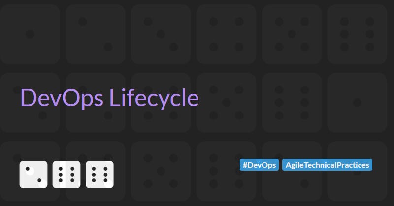

DevOps Lifecycle
DevOps is a set of practices, principles, and cultural philosophies aimed at improving collaboration and communication between software development (Dev) and IT operations (Ops) teams. The goal of DevOps is to enable organisations to deliver applications and services at high velocity, evolving and improving products faster than traditional software development and infrastructure management processes.
In this article I want to try and take a deeper look and understand the stages of the DevOps lifecycle - the iterative process of software application development and operation. I will challenge some of the foundations of the classical DevOps lifecycle and propose a new version that is more robust and clearly defined.
Key Principles of DevOps
- Collaboration and communication. DevOps emphasizes breaking down silos between development and operations teams to foster a culture of collaboration and shared responsibility. This includes frequent communication, shared goals, and mutual trust.
- Automation is critical in DevOps to streamline and accelerate processes. This includes automating code integration, testing, deployment, and infrastructure provisioning to reduce manual efforts and minimize errors.
- Continuous Integration (CI) involves regularly merging code changes into a shared repository, followed by automated testing to detect issues early.
- Continuous Delivery (CD) ensures that code changes are automatically built, tested, and prepared for release to production, allowing for frequent and reliable software updates.
- Infrastructure as Code (IaC) treats infrastructure configuration and management as code, enabling version control, repeatability, and automation of infrastructure provisioning using tools like Terraform, AWS CloudFormation, or Azure ARM templates.
- Continuous monitoring and observability provide insights into the performance and health of applications and infrastructure. This involves collecting and analysing metrics, logs, and traces to identify and resolve issues proactively.
DevOps is often augmented and integrated with security practices. Integrating security practices into the DevOps pipeline ensures that security is considered at every stage of the development lifecycle. This includes automated security testing and compliance checks. This approach is often referred to as DevSecOps.
The DevOps Lifecycle
The DevOps lifecycle is often described by a set of interrelated stages forming a loop and represented by a infinity symbol.
The diagram below is a typical representation.

The implication of this type of diagram is that the stages of the DevOps lifecycle are sequential and that the output of one feeds into the next. Output from the final stage loops back into the first stage to indicate that the process is continuous and iterative, allowing for ongoing improvements and refinements based on real-world performance and insights.
There are varying opinions on which stages belong in the DevOps lifecycle loop diagram, but typically the sequence is defined as: Plan - Code - Build - Test - Release - Deploy - Operate - Monitor.
The stages are often loosely defined as follows:
- Plan: This stage involves defining the project's goals, scope, and requirements. It includes creating a roadmap, setting up timelines, and determining the resources needed.
- Code: In this stage, developers write the application code. Version control systems like Git are used to manage code changes and collaboration among team members.
- Build: The code is compiled, and builds are created. This stage includes automated tools to compile, package, and produce artifacts ready for deployment. Continuous Integration (CI) tools are commonly used to automate this process.
- Test: Automated testing is performed to ensure code quality and functionality. This stage includes unit tests, integration tests, and performance tests to identify and fix bugs early in the development cycle.
- Release: After successful testing, the code is prepared for release. This stage involves configuring the environment, managing release notes, and ensuring all components are ready for deployment.
- Deploy: The application is deployed to the production environment. Continuous Deployment practices ensure that deployments are automated and reliable.
- Operate: This stage focuses on monitoring and maintaining the application in the production environment. It includes infrastructure management, system administration, and monitoring performance.
- Monitor: Continuous monitoring is essential to detect issues, gather performance metrics, and ensure the application runs smoothly. Feedback is collected from the production environment to inform further development and improvements.
I find the above stage definitions problematic due to their vagueness. The most obvious issues include:
- Trunk based development / Continuous integration requires verification of the code at the automated Build stage , yet the model implies testing only happens at the subsequent Test stage.
- Many of the types of test involved in the Test stage require the code to be released and deployed to an environment before they can be executed. Yet the Test stage happens before the Release stage.
- Release and Deploy stages do not appear to be distinct activities and have significant overlap in responsibilities.
- Operate and Monitor stages do not appear to be distinct activities and have significant overlap in responsibilities.
Let's try and create a better model for the DevOps lifecycle by defining each stage more precisely and considering the outputs that stages generate.
A Better Definition of the DevOps Lifecycle
I prefer to define the DevOps lifecycle with the following stages: Incept - Plan - Develop - Integrate - Release - QA - Deploy - Operate & Monitor.

I will define the stages in more details below, but before we get started let's consider the above diagram in a little more detail. It is clear that there is a direction of flow from the diagram - implying the outputs of a stage feed into the next. To more clearly define the stages we will discuss the output of each stage and how it affects the subsequent stage. What may be less clear is that there is also a feedback loop from each stage to the previous. Feedback loops are essential for validation assumptions and identifying quality issues early in the delivery process. When considering the definition of a stage we will look closely at both the output and the feedback that the stage provides.
As we have seen, the DevOps lifecycle is an infinite loop of activities where the output of a stage feeds into the next but this raises the question of how and where do we start?
The answer is in the initial, one-off Incept stage.
Stage 0: The Incept Stage
Prior to the any Plan stage we need to start the project and bootstraps the DevOps lifecycle loop. The project bootstrapping process, sometimes called the Incept stage, is worthy of more detailed discussion its own future article. For now, here are some typical high level activities that may be part of this process:
- Engaging with stakeholders that will drive the success of the project
- Doing discovery work to understand the problem to be solved
- Estimating to determine feasibility and establish return on investment
- Defining the architectural approach
- Defining non-functional requirements
- Building a preliminary backlog
- Initial security threat modelling
The key output of the Incept stage is the decision to proceed or not. It is often wiser to halt a project early than to waste resources on a doomed effort. The Incept phase is crucial for identifying potential failure points, such as lack of stakeholder support, unclear goals, technical infeasibility, insufficient skills, inadequate funding, perceived lack of value, and ethical concerns.
Assuming a successful Incept stage and a decision to process has been made, a number of additional outputs from this stage can feed into the next Plan stage. At a minimum we should expect the outputs to include a high-level backlog of functional and cross-functional requirements. Outputs may also include a product vision and strategy, rough architecture diagrams, team roles and responsibilities, initial project timelines, risk register, and preliminary resource allocations.
Stage 1: The (Initial) Plan Stage
The Plan stage is the first proper stage of the DevOps lifecycle. As we have previously discussed, stages in the DevOps lifecycle are sequential, continuous and iterative. The key point here is that the process is iterative. This is not a Waterfall Process and we do not do all the planning first before starting the next phase. Instead we must take an incremental approach to planning. Agile methods are a natural fit here and, whether you implement XP, Scrum, or Kanban, the incremental approach allow you to break up the work to be done into small batches that release value into the hands of customers earlier, reduced deployment risks, and allow your organisation to be responsive to change.
Planning is probably the least controversial stage of the DevOps lifecycle to define. Fundamentally the primary purpose of planning is to defining what to do next based on which pieces of work have the highest value. However I think it is useful to make a distinction between the initial planning stage and planning as the result of production monitoring feedback (which we will discuss when we review the stages of the lifecycle that feedback into the Plan stage later in this article).
The initial Plan stage involves refining the outputs of the Incept stage. Typically the high-level backlog of functional and cross-functional requirements is broken down and refined. Refinement identifies work to be done but may also involve UX design and making just-in-time architectural decisions.
The Three Amigos practice is extremely useful when refining the backlog of work to be done. It allows the business to define the problem to be solved, the engineer to suggest ways to fix the problem, and the QA to question the solution to ensure it does actually fix the problem. The practice can be extended to include other stakeholders as needed. For example, in the past, I have ran workshops that included a UX designer in the discussions. These Four Amigos sessions were particularly useful during initial stages of the project where the UX was being was being designed and iterated. This collaborative approach ensured that user experience considerations were integrated early, leading to a more cohesive and user-friendly solution.
As well as refining the work to be done, the planning stage must also consider the team size and structure needed to deliver the project in an acceptable timeframe for an acceptable cost. Often team size and structure will be determined by the project's scope and complexity. As a rule of thumb each team should be organised according to the Two-Pizza Teams rule which typically means 5-7 cross-functional members per team.
The maximum number of teams that can work effectively and autonomously on a given project can be difficult to determine. One technique that has worked well for me in the past is to apply Domain-driven design to break a project down and give each stream aligned team responsibility for one bounded context.
Team size and structure can also be influenced by the phase of the project. At the start of a green-field project is it sometimes useful to start with a smaller team that can set up the development standards and walking skeleton of the project before ramping up and onboarding more team members.
The outputs of the Plan stage are a set of refined and prioritised work items and a resource plan to deliver the work.
Stage 2: The Develop Stage
I prefer to define this stage as the Develop stage rather than the Code stage. Development includes design, coding and testing and is more aligned with my view of what activities engineering teams perform at this point in the DevOps lifecycle.
During the Develop stage engineers design, code and test application features. The inputs to this stage are the refined and prioritised set of work items that are outputted from the Plan stage. Usually work items are clearly defined during the Plan stage and implementation is straight forward. Sometimes when the solution is not immediately clear, teams might need to spend some time researching the best solution. This preparation work is know as a spike. Outcomes of a spike feeds back into the Plan stage to inform the next planning iteration.
I have a preference for using Test Driven Development during the Develop stage. TDD promotes good design and maintainability while ensuring we have a set of tests that can prevent regressions. Specifically, I prefer the Outside-in style of TDD described in the GOOS book. In this style of TDD, an engineer start by writing a failing high-level acceptance test that captures the expected behaviour of the system from an end-user or external interface perspective. This failing outer-loop test then drives the engineer to implement lower level unit tests following the standard red-green-refactor pattern. The combination of acceptance and unit testing leads to a double loop testing cycle.
flowchart LR
subgraph as2[ ]
direction LR
Red2((Write a failing<br/> acceptance test))
subgraph as[ Inner Loop ]
direction LR
Red((Write a failing<br/> unit test)) ---> Green
Green((Make the test<br/> pass)) ---> Refactor
Refactor((.. Refactor ..)) --> Red
end
Green ---> Red2
Red2 ---> Red
end
linkStyle default interpolate basis stroke-width:3px,fill:none
style Red2 fill:#9e280b,color:#fff,stroke-width:4px,stroke:#f00
style Red fill:#9e280b,color:#fff,stroke-width:4px,stroke:#f00
style Green fill:#0b9e52,color:#fff,stroke-width:4px,stroke:#0f0
style Refactor fill:#0b439e,color:#fff,stroke-width:4px,stroke:#00f
If I am working on a system with many independent (micro) services, I tend to use Contract Testing as my outer loop acceptance tests. Contract testing ensures that systems are compatible by capturing interactions between each system, storing these interactions in a contract, and verifying that all parties adhere to the contract. In complex distributed systems, end-to-end integration tests tend to be slow, difficult to maintain, can be unreliable or flakey, hard to fix, and find bugs too late in the development process. In contrast, contract tests provide the same level of confidence as end-to-end integration tests but run fast, are easier to maintain, are easy to debug and fix, are repeatable, and allow developers to quickly uncover bugs locally. Contract testing does not remove the need for end-to-end integration tests, but reduces the reliance on them. Fewer end-to-end integration tests are needed making execution faster.
As I've been describing the Develop stage, it has been implicit where these activities occur. To be completely clear, development activities happen locally on the engineer's machine. This, perhaps obvious statement, has some important consequences for productivity. Engineering productivity increases with faster feedback loops, therefore all activities that we want to execute in the Integrate stage (which we will discuss next) must also be executable locally during the Develop stage. If an engineer cannot easily run the application locally, they may need to integrate their work and release the application to a test environment in order to verify any change. This extended feedback loop can cripple productivity and should be avoided where possible.
Because the activities of the Develop stage happen locally, a mechanism is needed to manage code changes, enable collaboration among team members, and provide a single source of truth. Note that code in this context includes not only application code but also infrastructure code and automated end-to-end integration test code. In order to provide these capabilities, all code must be managed by a version control system.
When using version control systems, there are two main types of workflow:
- Trunk based development (either committing straight to the trunk or short-lived feature branches - which is more suitable for larger teams)
- Feature branch based development (using workflows such as Gitflow)
My preference is for trunk based development.
Regardless of the workflow, the output from the Develop stage will be a changes set - either a commit to the main branch or a pull request to merge a feature branch into the main branch.
Stage 3: The Integrate Stage
I prefer to define this stage as the Integrate stage rather than the Build stage. Integration includes building, testing, and merging changes into the main branch and is more aligned with my view of what activities performed at this point in the DevOps lifecycle.
The Integrate stage is the first stage of the DevOps lifecycle that can and should be fully automated. The stage is triggered by a change set being committed to the version control repository. Because of the way in which the stage is triggered it is sometimes called the commit build. The purpose of the Integrate stage is to verify that the change set is valid. A typical integration process will involved the follow steps:
- Build. Ensure that the code can be compiled. This is the most basic verification step that makes sure the engineer has not missed something when creating the change set. Obviously the build step is only required for compiled languages. Interpreted languages, such as Python, do not require a build step.
- Unit Test. From an integration perspective, unit tests have a number of characteristics that make them ideal. Properly written unit tests isolate each unit under test and mock slow external dependencies to ensure the tests are granular, fast, and repeatable. Each unit test should focus on a very specific aspect of the software’s functionality, which makes it easier to pinpoint the cause of a failure or regression.
- Contract Test. If you are using contract testing then these tests should be executed during the commit build. While contract tests are not as granular as unit tests, they should be equally as fast and repeatable. Contract testing allow you to answer the question: can the new version of my service be deployed without breaking the contracts of consumers of my API?
- Code analysis. Various types of language specific code analysis may be performed as part of the integration process. This may include spell checking, code style and format enforcement, duplicate code detection, applying cyclomatic complexity rules, and ensuring correct implementations of other best practices.
- Code coverage checks. This type of checks can increase confidence by providing insights into how much of the code is being tested by the unit tests. Code coverage is not always important or valuable, especially if you are following test driven development practices. It can be especially useful when working with legacy code to ensure that any new tests increase coverage as the code is modernised.
- Static application security testing (SAST). Scan the codebase for security vulnerabilities allowing organisations to continuously assess and improve their code security. SAST tooling ensures robust and secure applications while reducing the cost and effort associated with fixing vulnerabilities later in the development process.
Failure of any of these steps feeds back in to the Develop stage where the code must be adjusted to address the failure.
As discussed above, engineers needs to be able to execute all these steps locally. In an ideal world, many if not all of these steps would be executed automatically to staged changed before they are committed to the repository via pre-commit hooks.
It is considered good practices for the Integrate stage to take less than 10 minutes to complete. This practice come from XP. In Extreme Programming Explained, Kent Beck states that:
A build that takes longer than ten minutes will be used much less often, missing the opportunity for feedback.
To me, this does not ring true. Builds are automated on code commits, so stating they will be used much less often does not make sense. I guess this could mean that the result of the build is not checked as often if it take longer than 10 minutes, but I like to ensure that my builds notify me and my team on failure (ideally by messaging the team's Slack or Teams channel).
I still strongly believe that builds should take less than 10 minutes to execute, but my reasons for this are rooted in maintaining developer productivity and ensuring quick feedback loops. Long build times can disrupt workflow, cause delays in identifying and addressing issues, and ultimately slow down the development process. Fast builds keep the team agile, enable more frequent integrations, and help catch problems early, leading to more efficient and effective software development..
Optimising the commit build to ensure it can be executed in under 10 minutes is often a useful activity that boosts productivity. Typically this involves:
- Caching compilation output, only recompile changes. Can be particularly effective for complex repositories / mono-repos and languages with "slow" build speeds (such as C++)
- Limiting execution of unit tests, code analysis, and security scanning to the affected code.
- Excluding slow running integration style tests (these will still be executed, but as part of a different pipeline).
- Triggering different builds based on which files have changed by defining path triggers.
- Splitting the application across multiple repositories and allowing each repository to have its own, more focused, commit build.
The last point, splitting the application across multiple repositories, can be a complex, but worthwhile, optimisation. Fundamentally a repository is a unit of deployment. Components that needs to change together should be in the same repository, otherwise it is impossible to coordinate change and ensure component will work together. In a monolithic application, all components need to change together and therefore all code must be in a single repository.
Moving to a loosely coupled architecture that is supported with contract testing allows components to be deployed independently and therefore allows them to split into different, smaller repositories that have their own fast build process.
Before completing this section, I want to quickly discuss dependency management. Most applications will have some third party dependencies and ensuring these dependencies are up to date is crucial to reduce the risk from security vulnerabilities and the technical debt that comes from using outdated packages. While keeping these dependencies up to date is outside the normal Integrate stage, tools like dependabot can be used to create pull requests that leverage the commit build pipeline and streamline the dependency management process. You should always ensure that dependencies are being tracked and you have a process for regularly updating outdated packages.
The output from the Integrate stage consists of one or more immutable deployable artifacts. Whether the artifacts are executables or a containers, they must be must be versioned to ensure consistency and traceability across environments. Configuration values should be injected via environmental variables and secrets like passwords, certificates, and API keys should be provided securely via integration with a secrets management tool (such as Azure Key Vault, AWS Secrets Manager, or HashiCorp Vault).
Stage 4: The Release Stage
In a typical definition of the stages of the DevOps lifecycle, the stage after the Integrate stage would be the Test stage. With this classical definition, it is only after successful testing, that the code is prepared for release and the release process usually involves configuring the environment, managing release notes, and ensuring all components are ready for deployment.
I prefer to reorder the stages of the typical DevOps lifecycle so that the Release stage immediately follow the Integrate stage. I see the key activity of this stage to be the preparation of a pre-release environment. The reasons for reordering the stages are straight forward:
- Tests that an be execute without the artifacts being deployed to an environment (i.e. unit and contract tests) are executed as part of the Integrate stage.
- Other types of test that will be run as part of the DevOps lifecycle (and which we will discuss when we get to the QA stage) require the artifacts under test to be deployed to a test environment.
The Release stage is triggered after a set of artifacts have been created and, as stated earlier, the purpose of the Release stage is to prepare an environment so that further testing can be performed. The Release stage is the first stage in the DevOps lifecycle where infrastructure code is executed and tested. As with the Integrate stage, the Release stage can and should be fully automated.
The precise trigger for the Release stage can vary depending on whether we are releasing to a static or ephemeral environment.
A static environment is a persistent, long-lived environment that remains in place for an extended period. This type of environment is used for well-defined stages of the software development lifecycle, such as development, testing, staging, or production. Typically, there is only one fixed static environment available for the Release stage, which introduces limitations on throughput. This scarcity means releases must be queued and tested sequentially, or testing must be scheduled at specific times, both of which can cause problems:
- Sequential testing can create significant delays in identifying issues if changes from multiple teams are competing for the same testing environment.
- Scheduled testing can also cause delays due to infrequent test runs and can complicate defect identification, as multiple changes from different teams may be tested simultaneously, making it hard to pinpoint the root cause of issues.
An ephemeral environment is a short-lived, temporary environment that is created on-demand and destroyed after use. Ephemeral environments can address some of the limitations of static environments as they allowing changes to be tested in isolation and multiple changes can be tested in parallel by spinning up multiple environment. This ultimately leads to faster feedback loops and a more efficient development process.
Static and ephemeral environments can be used together. An ephemeral environment can be initially created to test a release and when successfully tested the release can be promoted to a static environment for manual testing or demos.
Failure of this stage feeds back in to the Develop stage where the code must be adjusted to address the failure.
The output from the Release stage consists of an environment with the latest versions of deployable artifacts.
Stage 5: The QA Stage
I prefer to define this stage as the QA stage rather than the Test stage. Testing is overused and occurs at both the Integrate and QA stages. Quality assurance is a broader discipline than testing that focuses on ensuring the overall quality of the software. And, even though this is the QA stage where most QA activities are executed, quality assurance engineers must be involved in every stage of the software development lifecycle to ensures that each stage of the process contributes to the overall quality of the solution.
The QA stage is triggered when a new release is made available on an environment. The purpose of the QA stage is to verify that the changes applied to the environment are valid and have not introduced any regressions. A typical QA stage may involved the follow activities:
- Integration testing. Integration tests aim to ensure that two or more system components work together as intended. This includes testing interactions between internal components, whether through direct API calls or via an intermediate messaging system, as well as interactions between internal components and external services (such as external APIs, databases, file stores, email systems, and message buses). The goal of integration testing is to take a broader view of the system and prevent regressions on a higher level. Integration testing via APIs is done using HTTP tools (such as JMeter, Postman or Insomnia) or other framework specific tooling that simulate external requests to a service (such as WebApplicationFactory for ASP.NET application or FunctionApplicationFactory for Azure Functions)
- End-to-end testing. These types of test involve simulating real user scenarios via the backend APIs of the entire system. The goal of end-to-end testing is to ensure the entire software application is production-ready and avoid risks post-release. End-to-end tests are valuable, but are the most complicated type of test to set up and maintain. Because end-to-end testing operates at the API layer, it typically uses the same tools as integration testing.
- UI testing. Extends end-to-end testing with the addition of testing behaviour through a user interface such as a mobile application or web interface. UI tests generally require more set up than end-to-end API tests and are often much slower to execute. UI tests are typically designed and executed via automation frameworks such as Cypress, Selenium or Playwright.
- Performance testing. Most of the testing we have discussed so far is designed to ensure the functional correctness of a system. Performance tests allow us to verify other cross-functional requirements (such as response time) are being met when a system is under load. Performance testing is typically done using tools such as K6, Artillery, and Azure Load Testing.
- Accessibility testing. Ensures that the application is usable by people with a wide range of disabilities. The goal is to verify that the application meets accessibility standards and guidelines, such as the Web Content Accessibility Guidelines, ensuring that it can be accessed and navigated by individuals with visual, auditory, physical, speech, cognitive, or neurological disabilities. Axe is an open source tool that can be used for accessibly testing and seamlessly integrates with UI testing frameworks via extensions such as Cypress-Axe, axe-core-nuget for Selenium, and axe-core-nuget for Playwright.
- Dynamic security analysis testing. DAST is a type of security testing that focuses on identifying vulnerabilities in a running application. Tools such as the OWAP Zed Attack Proxy can be run in a passivemode to identify security vulnerabilities as part of API or UI testing. Active scanning should also be executed to identify additional vulnerabilities.
If we consider the testing pyramid then we can make some key observations about the intentions of the types of tests that are executed during the QA stage.
- Integration, end-to-end and UI tests increase confidence that the system is performing correctly.
- These types of tests, while extremely valuable, are slow to execute, difficult to create and maintain, and are fragile to change in the system.
- The Test Pyramid suggests that as you move up the pyramid, the number of tests should decrease as the scope and complexity of what is being tested increases.
- This best practices approach ensures that your test suite is fast, cost-effective, and comprehensive, with the majority of testing focused on the foundational unit and contract tests, supplemented by integration, end-to-end, and UI tests to cover key interactions and user workflows.
As with the Integrate and Release stages, the QA stage can and should be fully automated. Failure of this stage feeds back in to the Develop stage where the code must be adjusted to address the failure. Resolving failures that arise in the QA stage can be difficult due to the complexity and fragility of the tests. When failure are detected by the QA stage, it is usually a good idea to replicate the problem with a low level unit or contract tests to ensure the regression is detected earlier in the process in the future.
As we stated above, the QA stage should be fully automated. While manual exploratory testing is still valuable for functional UI testing, DAST, and accessibility, it is slow and can hinder continuous delivery. Therefore, manual testing cannot be included in the DevOps lifecycle but should be treated as a supplementary and parallel activity.
The output from the QA stage consists of a version of the deployable artifacts of a system that have been verified in a test environment.
Stage 6: The Deploy Stage
The Deploy stage is triggered after a set of artifacts have verified in a test environment during the QA stage.
In the Deploy stage, the application is deployed to the production environment. Typically this involves executing the same pipelines that were used in the Release stage against a production environment. Reuse of existing pipelines that have already been used and validated in previous stages reduces the risk of deployment failures.
In addition Blue–green deployment or Canary release strategies can be used to reduce the risk of a production deployment failures further and provide a path to rollback any changes.
After deployment as smoke test may be executed. A smoke test is a preliminary test conducted to quickly evaluate whether the basic and most critical functions of a software build or system are working as expected. It is often referred to as a build verification test or sanity testing. The term originates from hardware testing, where devices were powered on and checked for "smoke" to ensure they wouldn't fail catastrophically.
The Deploy stage should be fully automated (including any smoke test). Failure of this stage feeds back in to the Develop stage where the code must be adjusted to address the failure. In addition failures should result in a rollback to ensure the system continues to be available to users.
The output from the Deploy stage consists of a version of the application that is live and available to end users.
Stage 7: The Operate and Monitor Stage
I prefer to combine the Operate and Monitor stages into a single Operate and Monitor stage. In the typical DevOps lifecycle these stages do not appear to be distinct activities and have significant overlap in responsibilities.
Unlike other stages in the DevOps lifecycle, the Operate and Monitor stage is a continuous process. While some activities may be triggered after a set of artifacts have been deployed and verified in the production environment during the Deploy stage, many more of the activities associated with this stage run continuously in the background. Typical activities of the Operate and Monitor stage include:
- Deployment management. If continuous deployment is not being implemented then deployment on new code and features must be managed manually. This includes coordinating release schedules, managing the deployment pipeline, and implementing rollback strategies in case of deployment failures (Operate).
- Incident detection and response. Automated systems detect incident (Monitor). These incidents are addressed, escalated, or resolved by the operational team (Operate).
- Alerting and notification. Alerts are generated when predefined thresholds or anomalies are detected (Monitor). These alerts are responded to and corrective actions are taken (Operate).
- Performance and availability management. Performance and health data is collected and analysed (Monitor). The insights gained allow operators to optimise configurations, scale resources, or adjust settings for better performance (Operate).
- System Maintenance: Regular system updates, patching, and software maintenance are managed (Operate). This is critical for ensuring that the system remains secure and up to date.
- Disaster Recovery: Handle disaster recovery procedures, ensuring business continuity in the case of critical system failures (Operate). Planning for and executing these recovery steps is often triggered by alerts (Monitor).
Choosing cloud based infrastructure and implementing appropriate automation can significantly reduce the management overhead of systems operations. Deployments and rollbacks can be fully automated by implementing a continuous deployment process. System maintenance is the responsibility of the cloud provider for cloud based infrastructure. Cloud native application can be scaled dynamically, based on system usage and load, or manually, by making simple configuration changes. Cloud solutions also provide comprehensive infrastructure monitoring capabilities.
Given that an appropriate Observability strategy has been implemented, the output from the Operate and Monitor stage consists of a collection of aggregated logs and metrics correlated across systems and services for performance, error tracking, and security purposes. As well as enabling the stage and supporting automated tracking of system performance, security, and health these logs and metrics provide valuable insights into how the system performs from the user’s perspective.
Stage 8: The (Subsequent) Plan Stage
During the initial planning stage we are limited to refining the outputs of the Incept stage. In subsequent planning stages we have access to additional metrics. As well as outputs that result from production monitoring feedback, we also need to Embrace Change. Change is inevitable in software projects - requirements evolve, technologies change, new regulations are introduced, and business strategies and objectives change over time.
As well as refining the work to be done, subsequent Plan stages may also track how quickly the work is being done. This may then result in (some limited) changes to team size and structure as long as we take into account the general principles of Brooks's law i.e. people added to a project take time to become productive, increased headcount increases communication overhead, and adding more people only works if tasks are divisible. I am particularly fond of quoting Brooks on the limited divisibility of some tasks:
While it takes one woman nine months to make one baby, nine women can't make a baby in one month.
As with the initial Plan stage, the main output of the subsequent Plan stages are a set of refined and prioritised work items to be delivered in the next iteration. In addition, outputs may include a plan to adjust team resources.
Summary
I hope this article has given you a deeper understanding of the stages of the DevOps lifecycle. I think by viewing the stages of the DevOps lifecycle through the lens of modern cloud native application development we can more clearly define the process and activities involved in each stage. Of course this is my view based on my experience and your views may be different. I'm open to expanding my view and if you feel that you have some insights worth sharing please contact me to continue the conversation.